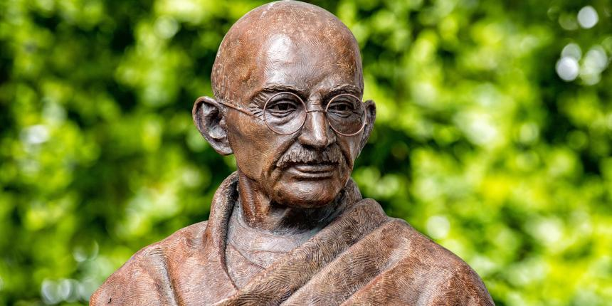

Mahatma Gandhi
Father of the nation

A statue of Gandhi in London
Time line of Mahatma Gandhi
- Mahatma Gandhi, byname of Mohandas Karamchand Gandhi, (born October 2, 1869, Porbandar, India—died January 30, 1948, Delhi), Indian lawyer, politician, social activist, and writer who became the leader of the nationalist movement against the British rule of India. As such, he came to be considered the father of his country. Gandhi is internationally esteemed for his doctrine of nonviolent protest (satyagraha) to achieve political and social progress.
- 1888 - Against the wishes of his family, Gandhi sailed for England to study law. In London, he was exposed to new ideas and many elements of British society and culture — he took dancing and violin lessons, read new religious works, and participated in British vegetarian groups.
- 1891 - Gandhi became officially licensed to practice law in court. Weary of life in London and having accomplished his goal of becoming a lawyer, he returned to India.
- 1893 - Gandhi traveled to South Africa to take a position as a legal consultant for an Indian trading and shipping company. Gandhi’s time in South Africa was crucial to his political evolution. The inequality and discrimination of South Africa’s colonial society were shocking to him, sharpening his political awareness and spurring his commitment to anti-colonial politics.
- 1894 - Gandhi worked with other Indian-rights activists in South Africa to create the Natal Indian Congress, an organization committed to giving Indians a collective voice in South African politics.
- 1899 - Gandhi organized an Indian Ambulance Corps at the beginning of the Boer War (1899-1902) to provide relief to injured British soldiers. Although Gandhi did not support the war on principle, he created the Ambulance Corps to send a message to the British that Indians were capable and responsible individuals who deserved the same rights as other British subjects.
- 1904 - Gandhi established the Phoenix Settlement, where his followers and friends (both Indian and European) experimented with living in community. This included a life devoted to vegetarianism, fasting, and alternative farming techniques. It was from here that Gandhi founded, edited, and published the journal Indian Opinion that served as a venue for Indians to express their ideas about the social and legal inequities in South Africa.
- 1920 - Gandhi organized a massive boycott of British goods and taxes to protest Western materialism and the British economic exploitation of India. Gandhi promoted locally produced goods over those imported from Britain.
- 1928 - Gandhi organized a tax strike in the city of Bardoli, Gujarat Province (Northwest India) to protest the creation of a constitutional reform committee that did not include a single Indian member. While he had originally argued for reform within the British system rather than revolution, it was around this time that Gandhi began to assert the need for complete Indian independence.
- 1930 - In protest of the Salt Act (1882), which forbade Indians from making their own salt, Gandhi led a 200-mile march from his ashram in Ahmedabad to the coastal town of Dandi (also in Gujarat.) When he arrived at Dandi, Gandhi knelt down and symbolically picked up a piece of natural, unprocessed salt from the shore, thereby violating British law. His march received widespread support across India, inspiring thousands of Indians to follow his example of non-violent civil disobedience. British authorities arrested more than one hundred thousand protesters, including Gandhi himself, but were forced to release Gandhi and other Indian leaders to negotiate an end to the protests.
- 1933 - Gandhi was largely absent from national politics for the next seven years. He spent his time visiting villages throughout India, speaking against the mistreatment of untouchables, women, and children, and campaigning for better and more pragmatic education in rural areas.
- 1940 - With the eruption of World War II in 1939, Gandhi soon returned to active politics. Great Britain had involved India in the war without its consent and British authorities began to strictly censor criticism of the war. In response to British censorship, Gandhi launched another satyagraha campaign, resulting in the arrest of thousands of protesters.